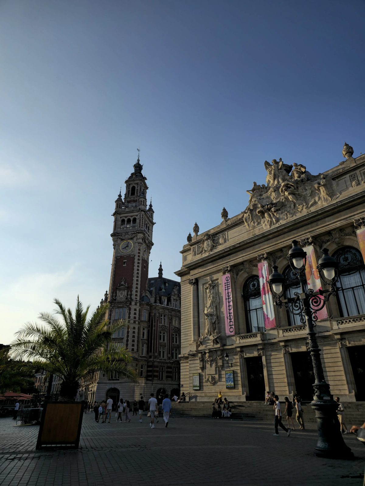

Lille, racontée par quelqu'un qui y vit.
Un guide indépendant pour découvrir Lille sans les clichés : où manger, où sortir, où se perdre dans les ruelles du Vieux-Lille, et comment profiter de la ville comme un habitué plutôt que comme un touriste pressé.

Le marché de Noël de Lille : le guide complet
Quatre-vingt-dix chalets place Rihour, la grande roue sur la Grand'Place, et six semaines d'illuminations. Où aller, quand y aller pour éviter la foule, et combien prévoir.
Lire le guide de NoëlLe guide
Ce qui anime la ville
Le marché de Noël, la Braderie, et les rendez-vous qui rythment l'année lilloise.
En savoir plusCe qu'il ne faut pas manquer
Vieux-Lille, le Beffroi, le Palais des Beaux-Arts, la Citadelle : les incontournables et quelques adresses moins connues.
En savoir plusManger des spécialités du Nord
Carbonnade, welsh, gaufres de Meert, et les meilleures tables du Vieux-Lille pour tous les budgets.
En savoir plusOù boire un verre le soir
De la rue Solférino aux bars du Vieux-Lille en passant par Wazemmes, selon l'ambiance recherchée.
En savoir plusBruges, Bruxelles, Gand et Tournai
Quatre villes à moins d'une heure de transport, faciles à faire dans la journée depuis Lille.
En savoir plus